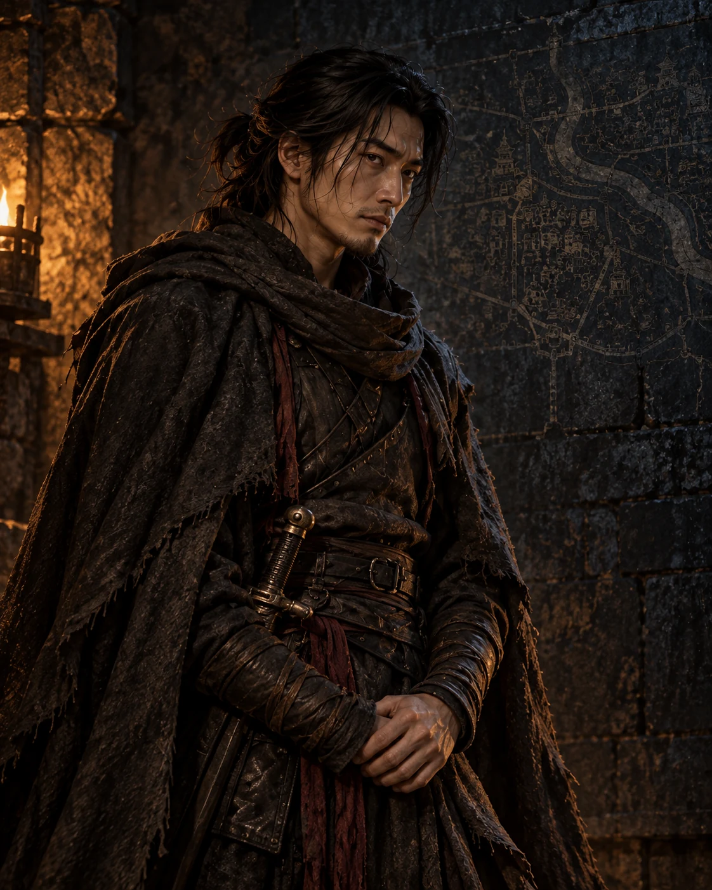
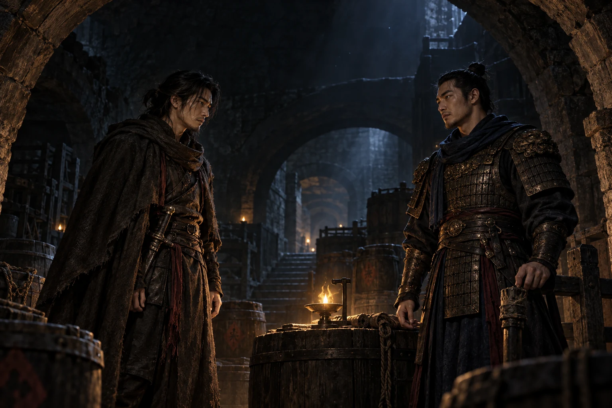
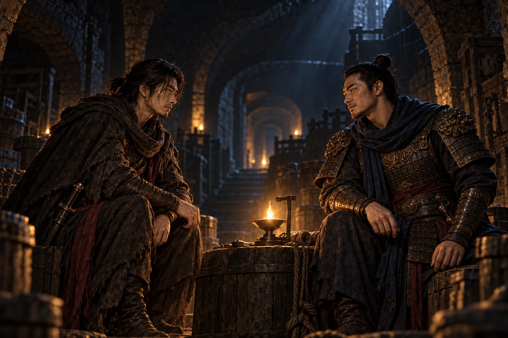
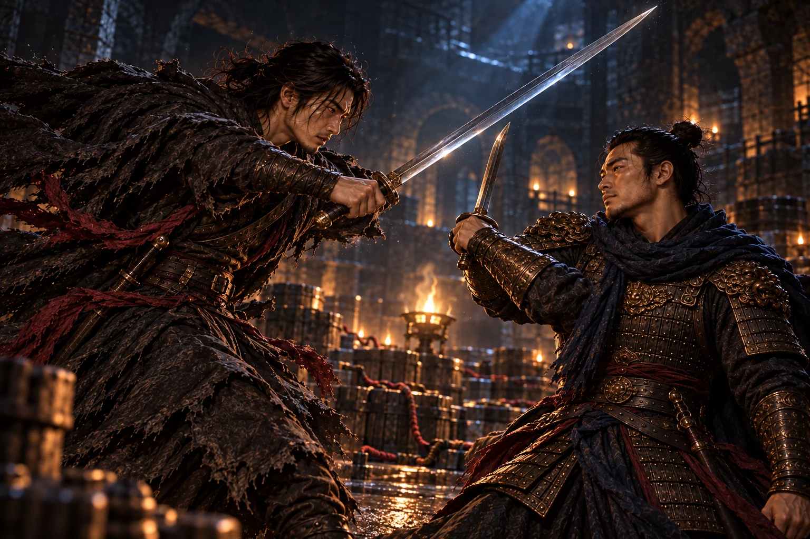

间谍
城邦守护者
长期潜伏敌营，把守护无辜者视为不可推卸的宿命。故友情谊是他仅存的温情。
关键词：隐忍、责任、守护。

课堂展示版 · 五幕战争悲剧
若救故友，满城覆灭；若救城邦，必须亲手杀死唯一的故人。
一夜、一城、两个旧友，一场没有正确答案的抉择。
DRAMATIS PERSONAE

城邦守护者
长期潜伏敌营，把守护无辜者视为不可推卸的宿命。故友情谊是他仅存的温情。
关键词：隐忍、责任、守护。

旧秩序反叛者
看透城邦腐朽后投靠敌营，企图用毁灭换取新生，却把全城百姓一并置于死地。
关键词：愤懑、反抗、决绝。

［深夜地窖。守夜人哼着童年歌谣走入灯火。］
熟悉的旋律让间谍卸下戒备。他以为故人只是前来叙旧，却从守夜人过分平静的神情中察觉异样。
间谍多少年了，我以为再也听不见这支曲子。
守夜人年少的时光那么真实，我才不愿兵刃相见。
歌谣唤回过去，也为告别拉开序幕。

［暗处显出火药桶与引线。灯火由暖转冷。］
守夜人承认投敌。他痛恨权贵压榨百姓、驱使将士无谓赴死，决定炸毁城邦，以一城的牺牲换取新秩序。
守夜人我早已投敌。时辰一至，城防崩塌、万民倾覆。
间谍所以你今夜前来，不是为了叙旧？
守夜人是告别。
反抗腐朽的理由，无法洗去献祭无辜者的残酷。

［城上钟声逼近。间谍的手缓缓按上刀柄。］
选择只剩两端：保全故友，全城覆灭；保全城邦，亲手杀死唯一的旧友。守夜人拒绝撤销布置，也拒绝束手就擒。
间谍你明知我身负守护万民的宿命，仍要把抉择丢给我？
守夜人我没有别的人选。除了你，没有人能阻拦我。
城与友成为刀锋两侧不可共存的生命。

［刀光映过石壁。两人以最熟悉的招式彼此攻防。］
一个要以毁灭终止腐朽，一个要以守护拒绝牺牲。旧日默契让决斗更加准确，也让每一次出手更加痛苦。
守夜人今日，不是你死，便是满城生灵赴死。
间谍城中万民无辜，故土山河无罪。
间谍这是我欠你的。
利刃落下，城邦获救，故友情谊被亲手斩断。

［引线熄灭。黎明照见安然无恙的城，也照见地窖中的故人。］
间谍救下万民、赢得大义，却失去了自己的世界。他守住城邦，也背负永远无法偿还的罪孽，最终选择自我终结。
间谍我守住了所有人，却没有守住我们。
旧曲余音无人再与他唱完那支少年歌谣。
城邦迎来清晨，他的世界永远停在黑夜。
CORE IDEA
他拒绝把百姓当作改变秩序的代价。选择城邦并不等于认同权贵，而是守住生命的底线。
他对旧秩序的控诉并非虚妄，却把应当反抗的权力扩大成了对整座城的毁灭。
悲剧不只是善恶对立，而是两种可以自证的信念，把曾经最亲近的人推向彼此毁灭。